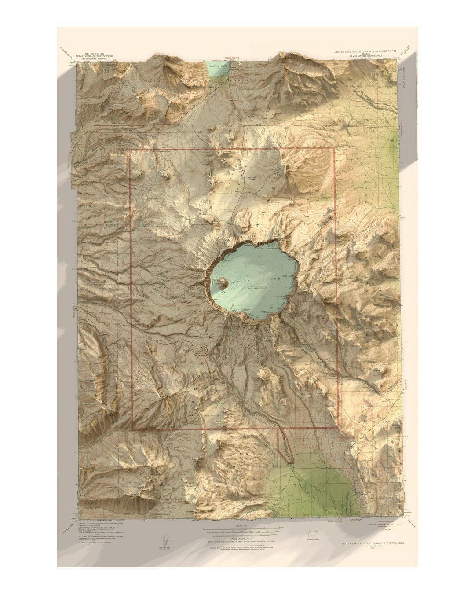
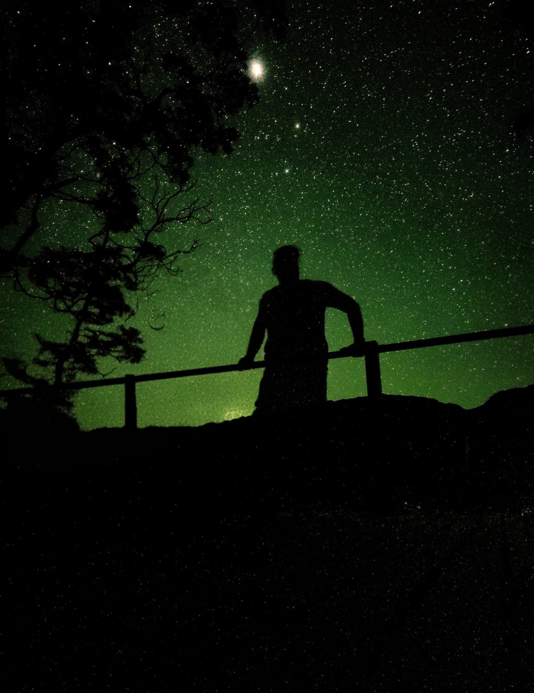
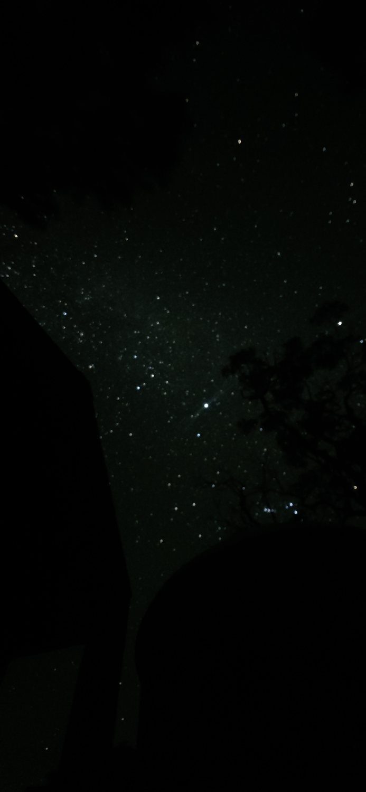

It starts on the ground, with a map
I trained as an environmental engineer, and my craft began in GIS and remote sensing. Before any model, there is a territory that has to be measured properly.
At DNIT, Brazil's federal transport infrastructure agency, I was the engineer and technical lead for GIS and databases in the planning survey unit from 2022 to 2025. I looked after the geospatial base of the national transport network (SNV), built the automation behind the Multimodal Maps, validated the topology and generated the routes of the waterway network, and worked out the number of lanes across the road network for national traffic modeling.
At CODEMGE, on the Minas Gerais State Logistics and Transport Plan, I ran the plan's PostgreSQL/PostGIS database, digitized and spatially analyzed the project portfolio, and kept the data current for a plan that looks out to 2055.
At the Federal Highway Police (PRF), for the past two years, I have been a senior data scientist serving its IT directorate: geospatial APIs, models for traffic and road safety, AI for unstructured data, and auditable products built with Internal Affairs.
From 2015 to 2023 I taught 26 university courses at the Patos de Minas University Center. Alongside that, I have consulted since 2015 and founded GFX GEO, an engineering firm focused on geospatial technology and data science.


Cartographic art
I also turn old maps into artwork: a historical sheet, an elevation model and light. Hover to zoom in. See the process on the GFX GEO page


Then the camera tilts up
In my spare time I shoot long-exposure astrophotography out in the bush, from questionable angles. These photos are mine. The sky at the top of this page is a tribute to them.




Every high-relevance project is a star
The constellations are the institutions. Hover a star (or tap it, or use Tab) to see the project as a layered blueprint: data, processing, model and product. Click to open it.
Or come in by field
Data science and AI, straight from the terminal
Career, stack, certifications, projects, company and education. Click the tabs or type a command, such as stack python or projects --prf.
Tip: help lists everything. Each technology under stack opens the projects where it was used.
I was the one who explained things
Before the data, the models and the APIs, there is a story. It starts with a gardener, a civil engineering class and a mango tree.
What I read and study
The mechanism is ready: shelves by subject, spines, covers. Hover a book to pull it off the shelf. For now it shows a preview of 14 titles from my technical library. The real shelf goes up once I finish marking what I have actually read.
Hover or tap a book.
This shelf is where my mentoring program comes from. It, GFX GEO and GFX Hub have their own homes; here they only get a mention.
Finding new bands and passing them on
It is an old hobby: friends keep asking for my playlists. I played professionally as a teenager and taught myself acoustic and electric guitar, harmonica, flute, bass, drums, percussion, keyboard, ukulele, viola caipira and piano. This is my favorite playlist, in the official player.
The record collection still needs cataloging. Until then, the platter spins with the playlist.
One find I am proud of: I introduced Grey Daze to plenty of people who had no idea Chester Bennington sang there before Linkin Park.
Who shows up most in the first 100 tracks
- The Lumineers6
- Audioslave4
- Blind Melon4
- Slash4
- The Milk Carton Kids4
- Alice In Chains3
- Chris Stapleton3
- The Last Internationale3
- Foy Vance3